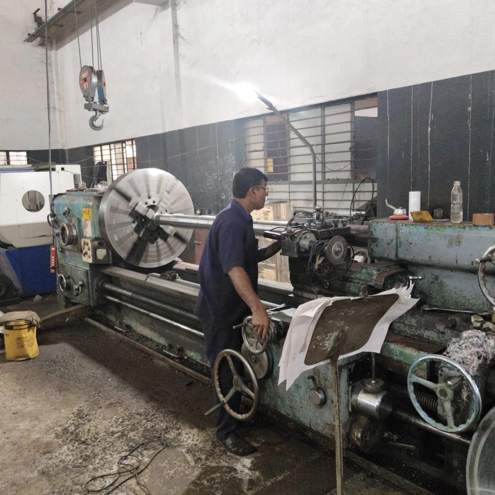
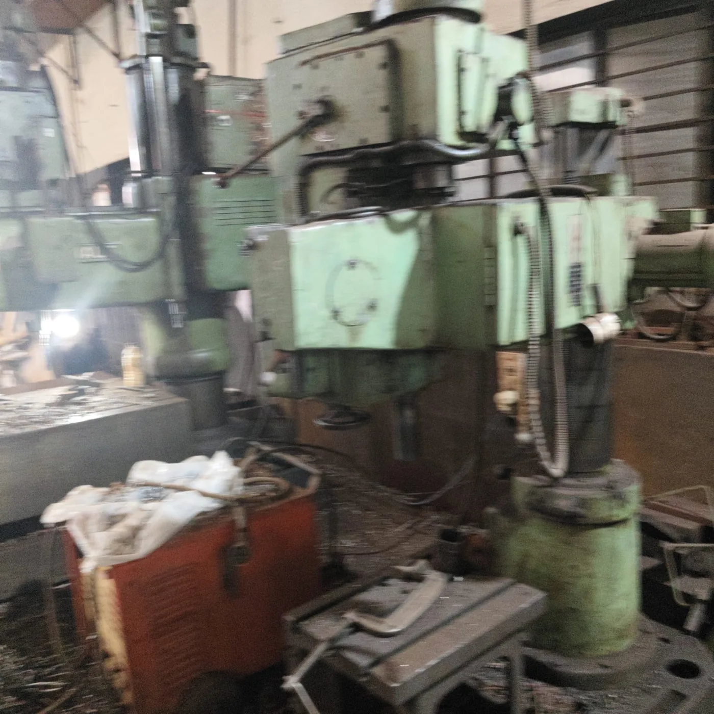

One Point of Coordination
Commercial communication, technical review, vendor coordination and progress follow-up are brought together through Vultrix.
Industrial furnace sourcing, combustion engineering, fabrication and machining — coordinated around the technical needs of your project.

Machining and fabrication solutions coordinated against drawings, material specifications and project needs.
Explore capabilities ↗
From one-off replacement components to repeat requirements, each enquiry is assessed for feasibility and inspection scope.
See the gallery ↗
Fabrication, furnace engineering and on-site technical coordination through suitable execution routes.
Discuss a requirement ↗Industrial imagery is illustrative; manufacturing capacity, quality inspection, tolerances and partner availability are confirmed per enquiry.
Industrial buyers should not have to coordinate engineering, vendors, technical clarifications and commercial follow-up on their own. Vultrix is built to simplify that process.
Commercial communication, technical review, vendor coordination and progress follow-up are brought together through Vultrix.
Our technical guidance draws on more than 30 years of individual industry experience across furnace systems, combustion, erection, commissioning and related disciplines.
We aim to understand the operating condition, drawings, interfaces and actual technical need before defining a solution or commercial scope.
Requirements can be matched with suitable machining, fabrication, manufacturing and execution capability based on the job rather than forcing every job through one setup.
From difficult replacement parts to furnace-related changes and multi-discipline project scopes, Vultrix is positioned for requirements that need technical thought.
We review genuine enquiries, clarify technical requirements and respond with a suitable next step based on the scope.
Industrial requirements are rarely just “buy this part.” They usually involve operating conditions, dimensions, material selection, interfaces, site constraints, performance expectations, drawings, timelines and commercial priorities.
Vultrix Global is built to sit in the middle of that complexity — understand the requirement, coordinate the right technical capability and keep the customer informed until the agreed scope moves toward delivery.
Talk to engineering →Whether the requirement involves combustion, engineering support, site execution or custom manufacturing, the goal is the same — make every customer feel they are working with a technically capable and commercially dependable industrial partner.
From industrial furnace sourcing and shutdown work to fabrication, machining, piping, electrical, instrumentation and automation, we connect the right technical capabilities with each requirement.
Furnace solutions matched to your process requirements. We can assess sourcing options with specialist furnace manufacturers and coordinate design discussions, proposals and agreed execution scope subject to partner availability.
Planned furnace shutdowns, revamps, maintenance and combustion-performance work, using agreed specialist manpower or the client's own team.
Drawing-led industrial manufacturing and mechanical work through suitable specialist workshops, foundries and execution partners.
Support for industrial electrical, control and instrumentation systems, with site execution and commissioning coordinated to the approved scope.
Mechanical and multidisciplinary installation support from site readiness through equipment alignment, trial and handover.
Support for furnace mechanical, structural and refractory works, coordinated with shutdown schedules and operational needs.
Technical and commercial coordination across scope definition, vendors, site teams, safety, milestones and commissioning.
Share your drawings, furnace specifications, site condition or technical problem. We will review the most practical engineering and sourcing route.
Share your requirement →We coordinate manufacturer sourcing, specification and drawing discussions, commercial offers and agreed installation or commissioning support. Scope and availability are confirmed through technical review.
Manufacturer sourcing, specification and drawing coordination based on the customer's requirement.
Technical enquiry review and coordination with suitable furnace manufacturers.
Requirement-based manufacturer sourcing and commercial coordination.
Specification, drawing and supply enquiries subject to technical evaluation.
Discuss requirements and potential execution routes with our team.
Manufacturer sourcing and quotation support based on the agreed scope.
Share specifications, drawings, site conditions and the technical scope for review.
Explore machining, fabrication, component and workshop imagery relevant to the services we coordinate. Final capacity, tolerances, inspection requirements and achievable quantities are reviewed for each enquiry.
Image note: Gallery images illustrate relevant equipment and work types. Photos will be identified as actual partner work only after their origin and publishing permission are verified.







Homepage furnace photography: Roselino Rocha / Pexels and Mehmet Turgut Kirkgoz / Pexels. Illustrative images, not Vultrix projects.
Vultrix Global coordinates engineering and manufacturing capability through specialist partners with heavy machining, turning, milling, boring, drilling, fabrication, welding, press work, finishing and component-manufacturing capability. This allows us to evaluate one-off components, replacement spares, development jobs and repeat requirements based on technical feasibility.
Large and complex engineering components, subject to machine envelope and feasibility.
Build-to-drawing and specification-based manufacturing support.
Conventional and coordinated CNC turning capability for shafts and rotational parts.
Machining support for large housings, plates, frames and equipment parts.
Secondary machining and finishing operations as technically required.
MIG / TIG welding, press-brake, shearing, drilling and fabricated assemblies.
Press operations and forming support for suitable industrial applications.
Evaluate hard-to-source components from drawings or available samples.
Prototype and development work for unique industrial requirements.
Recurring production support where capacity, quality and commercial requirements align.
Component-level assembly, repair and reconditioning support subject to assessment.
Finishing coordination for fabricated parts and assemblies.
Manufacturing is coordinated through specialist capability partners. Exact machine capacity, material grade, tolerance, inspection method and delivery commitment are confirmed during RFQ review.
Our technical guidance draws on more than three decades of individual hands-on experience across furnace systems, combustion, heavy equipment erection, electrical and instrumentation, refractory, mechanical systems, commissioning and customer handover.
Drawing, sample, operating problem, quantity and target timeline.
Technical feasibility, interfaces, missing information and execution route.
Scope, technical assumptions, deliverables and commercial basis.
Engineering, manufacturing or site coordination as agreed.
Applicable quality checks, documentation and readiness confirmation.
Dispatch, site execution, commissioning support or project closure.
Sector-specific execution is subject to technical review and scope confirmation.
Share whatever you already have — a drawing, photograph, sample description, operating issue, target capacity, quantity or timeline. You do not need a perfectly prepared RFQ before contacting us.